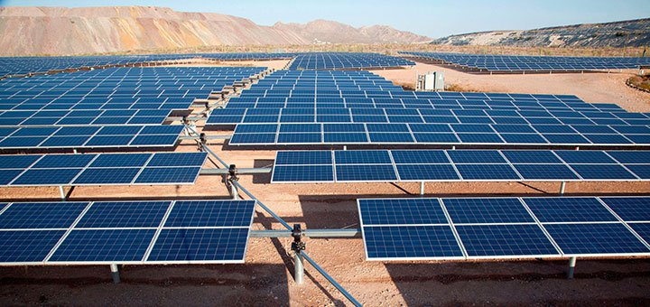
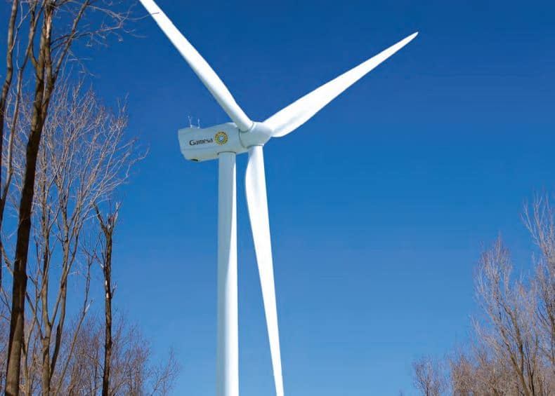
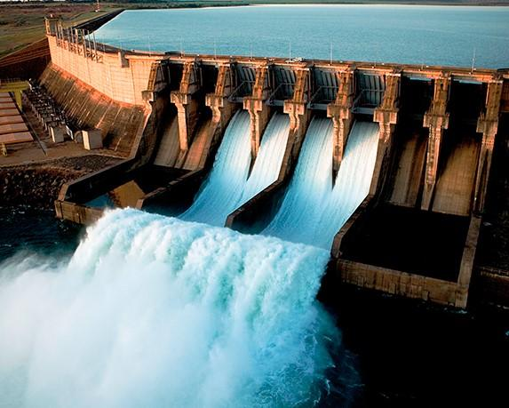

Como recursos inagotables (Por nuestra escala del tiempo) tenemos la energia solar, el viento y las mareas.
Para profundizar un poco mas en los recursos inagotables a continuacion les hablaremos uin poco mas sobre las energias inagotables:
Energia Solar:
La energia solar, como su nombre lo indica, es la que tiene como procedencia el sol. Gracias a ella obtenemos calor y electricidad. Las principales formas de aprovechar los rayos del sol son a traves de las diferentes clases de paneles solares: Las placas fotovoltaicas transforman la luz solar en electricidad. Las placas solares fototermicas aprovechan la energia solar para generar calor en tu vivienda. Y las temoelectricas sirven fundamentalmente para calentar agua gracias a la Luz solar, aunque tambien se puede emplear para calentar alimentos, o para destinarla a calefaccion.
Entre las ventajas de la energia solar, ademas de ser una energia limpia y renovable, estaria que se puede emplear n zonas donde no llega el tendido electrico (Las rurales, Por ejemplo), o que su mantenimiento no es sencillo. No necesita mucho espacio (Los paneles se instalan en los tejados) y solo se requiere una inversion inicial, puesto que luego no necesitaremos combustible para su mantenimiento.

Hay alguna desventaja? Pues si. Como en la gran mayoria de las ocasionas, hay pros y contras. La principal es que, segun la estacion del año (O nuestra ubicacion geografica) hay mas o menos luz solar, por lo que para algunos los paneles solares no resultaran atractivos. Y aunque la inversion economica es solo inicial, es un monto que no esta al alcance de cualquiera. Ademas, para una vivienda, habria que complementar esta manera de obtener energia con otros sistemas, como una bomba que, por ejemplo, haga circular el agua.
Energia Eolica
La energia eolica es la que obtenemos del viento. De molinos de toda la vida a velas de barcos, como los humanos aprovechando desde la antiguedad. Hoy tenemos molinos ("Aeorogeneradores" es su nombre tecnico) agrupados en parques eolicos (Colombia tiene, de hecho, terrenos muy buenos para ello, como la Isla de la Guajira o la Peninsula de San Andres, entre Otras).

La mayor ventaja de este tipo de energia es que es limpia y no genera residuos ni contamina. Pero sus detractores señalan como desventajas que deben situarse en zonas montañosas, y para llegar hasta ellas si contaminamos, erosionamos y destruimos vegetacion. Ademas, los molinos generan contaminacion acustica, puesto que son muy ruidosos.
Energia Geotermica
La energia geotermica es aquella que aprovecha el calor del subsuelo de nuestro planeta, por ejemplo para fines industriales, o para obtener agua caliente sanitaria. Es una de las renovables menos empleadas, puesto que aun no se ha desarrollado del todo la tecnologia para extraerla, aunque a su favor tenemos que una vez realizada la inversion en infraestructura, obtendremos un gran ahorro economico y energetico, aunque esto es sobre todo a largo plazo. No es ruidosa ni emite CO2 y ocupa poco terreno.
Los contras? La principal desventaja es que la fase inicial del proceso de extraccion del subsuelo puede ser larga y costosa. Requiere identificar el lugar idoneo, y hay que tener cuidado con las emisiones toxicas, como de acido sulfhidrico, o incluso algun escape de CO2. El impacto ambiental tampoco es nulo puesto que requiero perforar la superficie.
Energia Hidraulica
La energia Hidraulica es la que obtenemos gracias a la fuerza caida del agua, por ejemplo en un salto de agua natural como una catarata. Tambien construimos represas para generar ese salto. La energia se captura en centrales hidroelectricas.

Energia Electrica
La energia electrica, obtenida de fuentes renovables, puede generarse en centrales solares, eolicas, hidroelectricas, de biomasa... gracias al movimiento de cargas electricas (Electrones positivos y negativos) Que se producen en el interior de materiales conductores, como de cables metalicos. La energia electrica puede convertirse en luminosa, mecanica, termica, y es probablemente una de las mas empleadas en nuestros hogares.